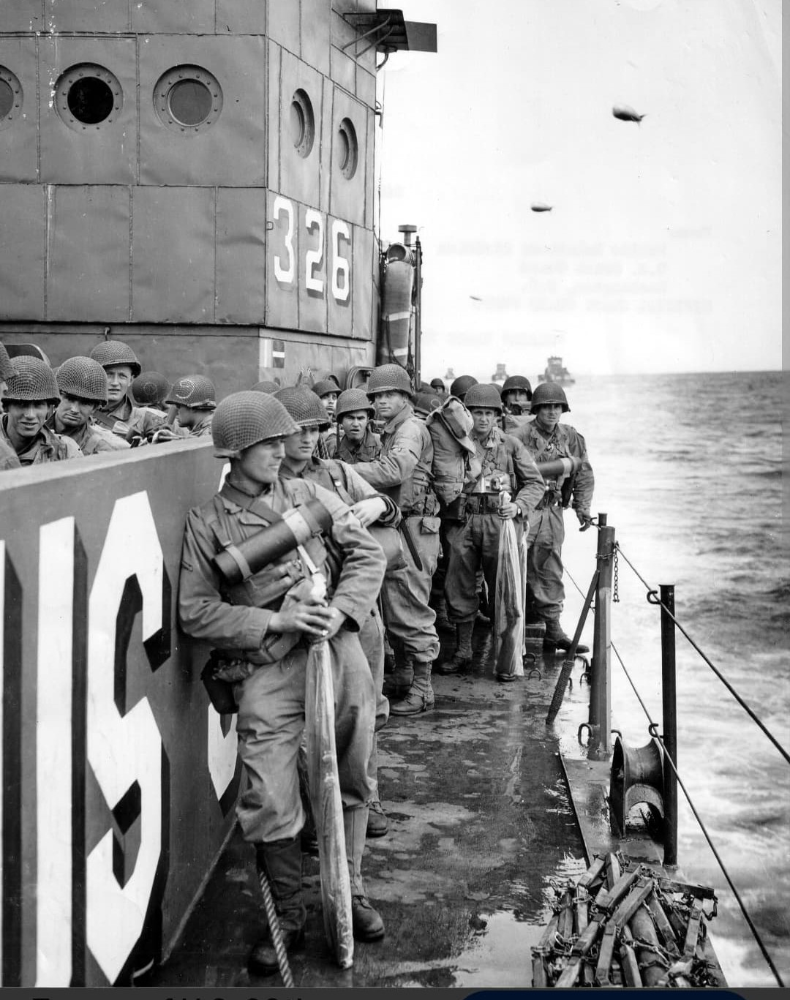
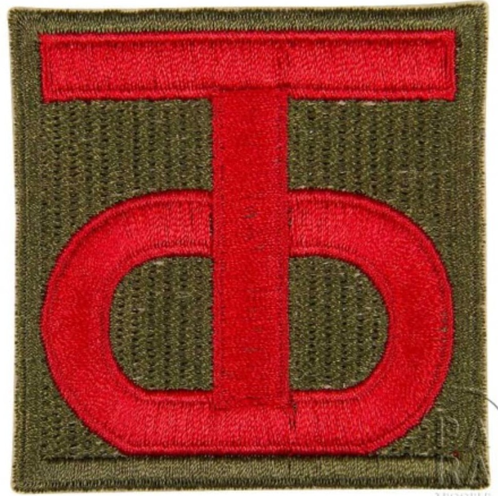

Introduction
Arborant le monogramme « T-O » sur leur écusson d'épaule, la 90th Infantry Division gagna sur le champ de bataille le surnom emblématique de « Tough 'Ombres » (les Hommes Durs).
Après des débuts chaotiques et traumatisants dans les haies du bocage normand en juin 1944, la division subit une réorganisation spectaculaire sous le commandement du général **Raymond McLain**. Elle devint l'une des unités d'infanterie d'assaut les plus redoutées de la Third Army du général George S. Patton, accumulant plus de 308 jours de combat ininterrompu.
Origine et insigne
Créée en août 1917 durant la Première Guerre mondiale, la division tire ses effectifs d'origine des États du Texas et de l'Oklahoma. Son insigne carré de couleur rouge porte en son centre les lettres monogrammées **T** et **O** entrelacées en couleur or.
Si les lettres représentaient initialement *Texas-Oklahoma*, la férocité des soldats au combat durant la campagne européenne transforma rapidement la signification populaire de l'insigne en *Tough 'Ombres*. Réactivée en mars 1942 au Camp Barkeley, la division s'entraîne intensivement avant son déploiement en Europe.

1944 : Le calvaire du bocage et la fermeture de la poche de Falaise
Débarquée sur **Utah Beach** le 8 juin 1944 (D+2), la 90th Division est projetée sans préparation adéquate dans la guerre des haies face aux parachutistes allemands vers Périers et le mont Castre, subissant d'imposantes pertes initiales.
L'arrivée du général Raymond McLain transforme la division. Lors de la percée de l'**Opération Cobra** fin juillet, la 90e Division fonce vers le sud, puis oblique vers l'est. En août 1944, les "Tough 'Ombres" s'emparent de Chambois et opèrent la jonction historique avec les Canadiens et la 1re Division Blindée polonaise, **fermant définitivement la poche de Falaise**.

Metz, les Ardennes et la découverte de la mine de Merkers
Rattachée à la 3e Armée de Patton, la division se distingue en novembre 1944 lors de la difficile **bataille de Metz**, réussissant un franchissement nocturne audacieux de la Moselle à Koenigsmacker. En janvier 1945, pendant la **bataille des Ardennes**, elle attaque le flanc sud du saillant allemand dans des conditions hivernales extrêmes.
Le **4 avril 1945**, en Thuringe, la 90th Division fait une découverte historique majeure à **Merkers** : dans une mine de sel, elle met au jour le trésor caché de la Reichsbank nazie, composé de tonnes de lingots d'or, de devises étrangères et de milliers d'œuvres d'art spoliées dans toute l'Europe.
Bilan humain et héritage
Au cours de ses 308 jours de combat ininterrompu du bocage normand aux montagnes de Tchécoslovaquie, la 90th Infantry Division déplore plus de **19 200 pertes au combat** (dont environ 3 340 tués).
Quatre de ses soldats ont reçu la prestigieuse Medal of Honor. La division a capturé plus de 83 000 prisonniers allemands, devenant l'une des unités d'infanterie d'assaut les plus respectées du théâtre européen.
Voir aussi
Page du Musée HOP WW2 – Section Unités & Divisions Célèbres